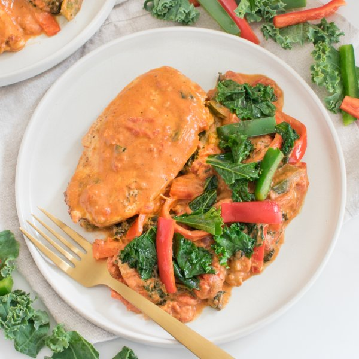

Creamy Cajun Chicken with Bell Pepper & Kale Sauté

Total Time
35 min
Nutrition (Per Serving)
556.8 kcalCalories
45.7 gProtein
20.9 gCarbs
33.3 gFat
Full nutrition table
| Calories | 556.8 kcal |
| Total fat | 33.3 g |
| Saturated fat | 18.1 g |
| Trans fat | 1.1 g |
| Cholesterol | 199.2 mg |
| Sodium | 230.2 mg |
| Carbohydrates | 20.9 g |
| Fiber | 7.4 g |
| Sugars | 10.9 g |
| Protein | 45.7 g |
| Potassium | 1469.2 mg |
| Calcium | 179.7 mg |
| Iron | 3.4 mg |
| Vitamin A | 1493.6 IU |
| Vitamin C | 198 mg |
| Vitamin D | 14.7 IU |
Cookware
Ingredients
- 1 ½ lbchicken breasts, boneless skinless
- 8 fl ozchicken or vegetable broth
- ½ (8 oz) blockcream cheese
- 2 (14.5 oz) cansdiced tomatoes
- 2green bell peppers
- 1 bunchkale
- 2red bell peppers
- black pepper
- butter, unsalted
- cayenne pepper
- garlic powder
- onion powder
- paprika
- salt
- thyme, dried
Steps
- Wash and dry the fresh produce.1 bunch kale
2 red bell peppers
2 green bell peppers - Preheat a large skillet over medium-high heat.
- Meanwhile, holding a knife parallel to the cutting board, cut the chicken in half horizontally to form thin fillets. Season both sides with salt and pepper.1 ½ lb chicken breasts, boneless skinless
½ tsp salt
¼ tsp black pepper - Once the skillet is hot, add butter and swirl to coat the bottom.¼ cup butter, unsalted
- Add chicken to the skillet and pan-fry, flipping once, until golden brown and cooked through, 6-8 minutes.
- While the chicken cooks, using a clean cutting board, fold kale leaves in half lengthwise and slice off the stems. Chop or tear leaves into bite-sized pieces and transfer to a medium bowl; set aside.
- Trim, seed, and slice bell peppers into thin strips.
- Once the chicken is done, remove to a plate and cover with foil. Return skillet to medium-high heat, add more butter, and swirl to coat the bottom.2 tbsp butter, unsalted
- Add peppers to the skillet and cook, stirring occasionally, until starting to soften, about 3 minutes.
- Add tomatoes, broth, and spices to the skillet. Stir to combine and bring to a simmer.2 (14.5 oz) cans diced tomatoes
8 fl oz (1 cup) chicken or vegetable broth
1 tsp paprika
½ tsp salt
½ tsp cayenne pepper
½ tsp garlic powder
½ tsp onion powder
½ tsp thyme, dried - Meanwhile, cut cream cheese into small pieces.½ (8 oz) block cream cheese
- Once simmering, reduce heat to medium. Add cream cheese, a few pieces at a time, and stir until melted and combined, 2-3 minutes.
- Add kale to the skillet in handfuls, waiting for the kale to wilt slightly before adding the next handful.
- Return chicken to the skillet and turn to coat in the sauce. Continue to cook, until heated through, about 2 minutes.
- To serve, divide chicken and veggies between plates. Enjoy!